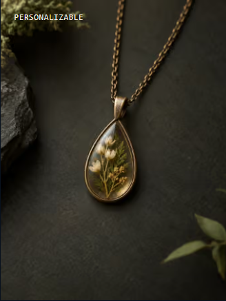
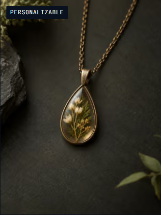
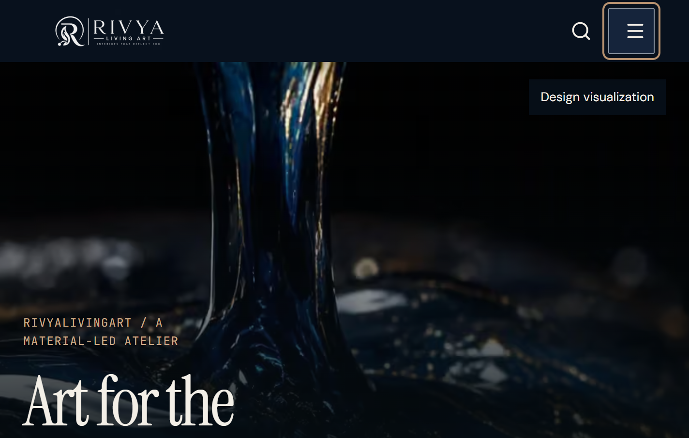
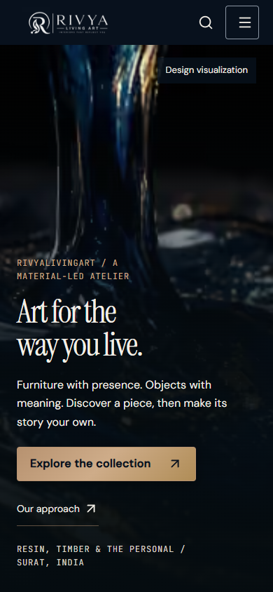
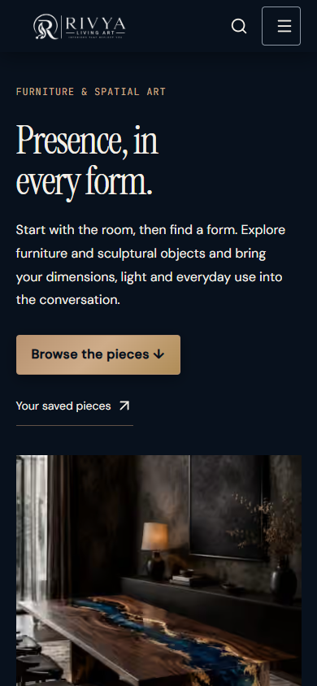

Homepage
3.09s → 2.25s
Recorded before the owner's main-branch release request. The local-only wording below describes the evidence date. See the release packet and its GitHub PR for release status.
The latest local work improves mobile loading, makes product labels readable and completes native browser zoom and assistant contrast checks across the website and Studio.
Native zoom & contrast scope passed Full C6 acceptance remains open
Three cold-browser samples per page, under the same throttled mobile profile as the earlier C6 comparison. Grey is the earlier median; warm beige is the current median. Network and database variability contribute to the difference.
3.09s → 2.25s
4.62s → 2.81s
4.12s → 1.94s
5.16s → 1.94s
| Page | Earlier LCP | Current LCP | Current range | Max CLS | Menu event max |
|---|---|---|---|---|---|
| Homepage | 3.09s | 2.25s | 1.93–2.54s | 0.0000 | 168ms |
| Collection | 4.62s | 2.81s | 2.50–3.00s | 0.0000 | 152ms |
| Product | 3.30s | 2.15s | 2.15–2.58s | 0.0003 | 136ms |
| Custom brief | 1.68s | 1.70s | 1.68–1.76s | 0.0598 | 104ms |
| Process | 2.56s | 2.20s | 2.04–2.33s | 0.0000 | 104ms |
| Studio inquiries | 4.12s | 1.94s | 1.93–2.42s | 0.0000 | 176ms |
| Homepage editor | 5.16s | 1.94s | 1.92–1.99s | 0.0141 | 144ms |
Profile: 390×844, DPR3, 4× CPU slowdown, 150ms latency, 1.6Mbps down, reduced motion. Local compiled server and remote isolated QA database; server/image caches may be warm. All final routes were verified, including signed-in Studio and the selected homepage editor.
The collection image is the remaining largest-contentful element. Its three runs were 2.500/2.808/3.004s; response time varied from 0.513 to 0.981s. Further hosted measurement must separate regional response time, cold starts and image delivery. Real-user p75 LCP, INP and CLS remain unverified.
The review found badges whose undefined colours allowed the photograph to show through. A solid navy surface and ivory label now give the text dependable contrast.


49 destinations were checked at 200% and 400%, with a 100% baseline: 99 observations and six modal/focus-return checks. Native zoom changes the viewport from 1424 to 712 and 356 CSS pixels while DPR changes from 1 to 2 and 4. This is actual Chrome page zoom; CSS zoom and visual-viewport scale remain 1. No horizontal page overflow was found.

98 desktop/mobile states cover 49 destinations. All 2,284 measured text cases over gradients and images pass, with a minimum measured ratio of 5.26:1. The follow-up verified named thumbnail and image-placement groups, reachable pagination and repair links, and the empty follow-up table. Studio repair links are underlined and measure 6.97:1.
The broader matrix passed 144 automated accessibility scans, 73 keyboard/interaction assertions, ten state scans and 26 reflow observations. Ten image/motion observations pass the scoped guards. Automated checks and assistant visual review do not certify human screen-reader use or physical-device behaviour.


A new synthetic page in isolated QA passed draft → exact private preview → publish → public verification → later publication → revision recovery → withdrawal. Its history is retained and the page is hidden. All pre-existing and protected product, media, business, content, inquiry, order and staff records matched their baseline.
No production publication, customer message, export, erasure or backup action occurred. Product scraper, product/contact/social facts and gallery associations are unchanged. Backup and key-custody tasks remain removed by your instruction.
C7 release has not started. These changes remain local until a new explicit push-main instruction, followed by a detailed PR. Optional video and production editorial/Imprint acceptance remain separate.